Fear of transactions
Some customers preferred asking family members to purchase for them because online payment felt risky.
Handmade jewellery / inclusive e-commerce
A mobile-first shopping experience that helped a handmade jewellery brand move from Instagram DMs and flea markets into a dedicated, trustworthy online store.
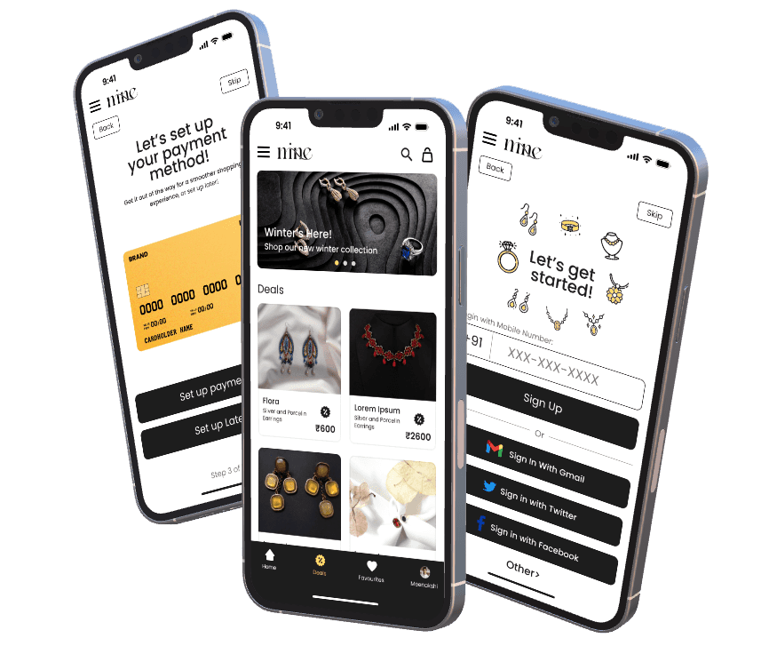
Brief
Mine by Min sold unique handcrafted jewellery mainly through Instagram conversations and in-person flea markets. That model created warmth and trust, but it also limited order volume, made product discovery inconsistent, and left customers dependent on a manual back-and-forth before purchase.
The opportunity was to create an e-commerce experience that simplified onboarding, made payment setup less intimidating, represented handmade products more honestly, and gave customers enough confidence to order independently.
The store had to scale the business without stripping away the reassurance people got from the maker.
Research
I used interviews, online surveys, and field observations to understand how different customer groups bought handmade jewellery. Younger shoppers were comfortable browsing online, but still questioned product authenticity. Older customers often liked the products but felt excluded by payment setup, English-first interfaces, and fear of making irreversible mistakes.
Some customers preferred asking family members to purchase for them because online payment felt risky.
Formal translations, dense labels, and technical payment terms made simple actions feel heavy.
Customers needed scale, material, fit, and believable reviews because handcrafted items are tactile.
The Instagram-DM model made discovery and repeat purchase dependent on memory, chat, and availability.
Personas
Homemaker in Ernakulam. Speaks Malayalam, reads limited English, and wants to buy jewellery for herself or as gifts without asking her children for help.
Architect in Alappuzha. Comfortable online, but cautious with local craft stores because polished photos can hide scale, material, and finish.
Journey
Information architecture
The sitemap separated two jobs that were easy to conflate: helping excluded users enter the product safely, and helping confident shoppers move quickly into discovery. Onboarding covered language, signup, profile, address, and payment. Shopping covered homepage, categories, favourites, product detail, cart, and order success.
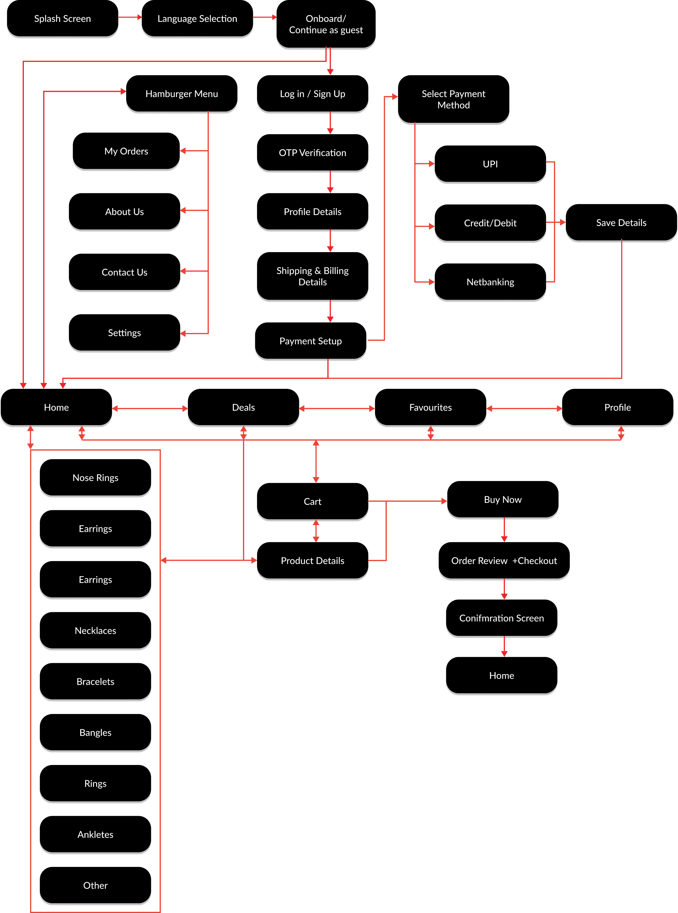
The flow kept payment setup available, but not so forceful that it stopped users from exploring products.
Low fidelity
The first prototype deliberately stayed low fidelity so feedback stayed focused on comprehension: Can users pick a language? Can they understand payment setup? Can they reach the store without feeling trapped in forms?

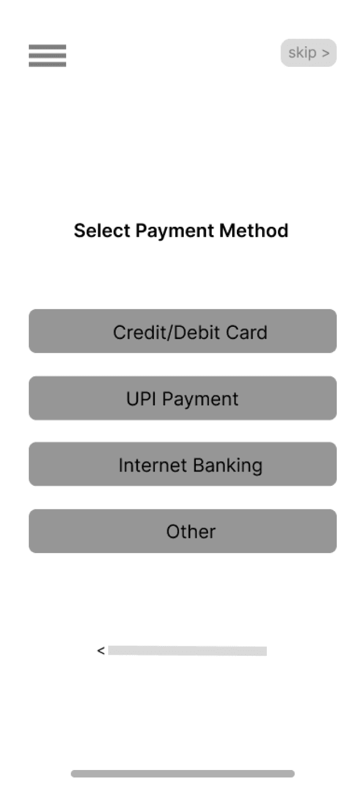
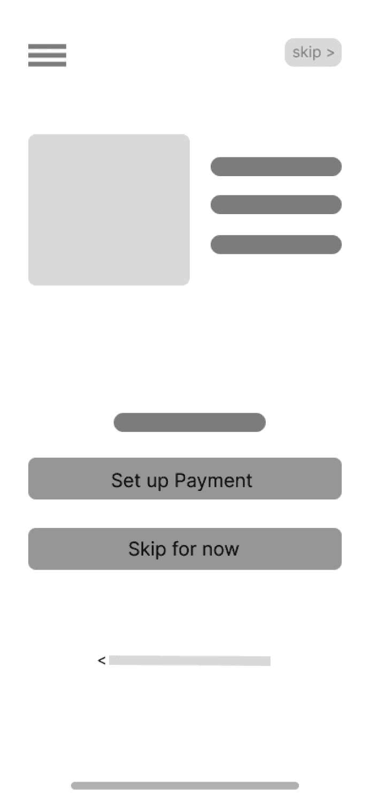
Low-fidelity screens were used for onboarding, language selection, and payment comprehension only.
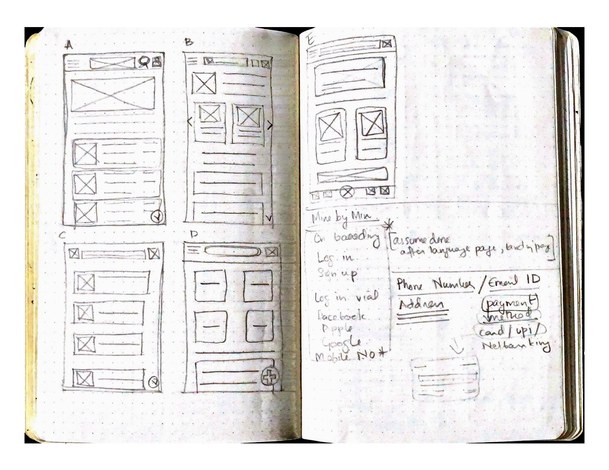
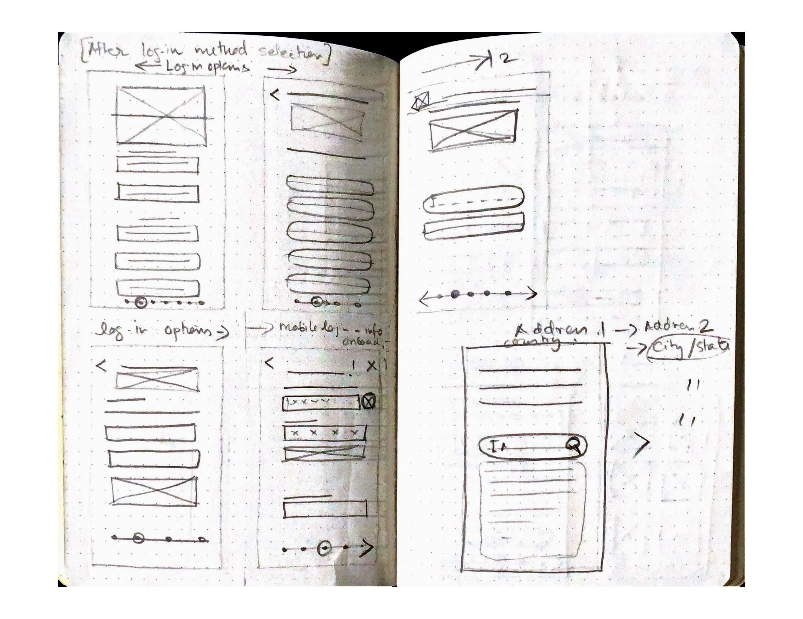
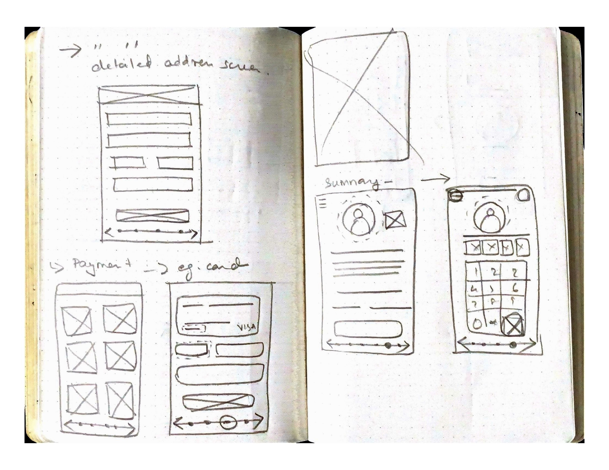
Testing
I tested the low-fidelity flow with five participants aged 20-65 in remote, unmoderated sessions. The study measured how long it took to sign up, add payment, reach the homepage, and understand where they were in the flow.
The menu had to feel precise and readable, especially for users relying on Malayalam as their comfort language.
Participants wanted payment access from the homepage and clearer emphasis on UPI, the method most familiar locally.
Users were more comfortable when each onboarding step had a clear position in the larger flow.
Refinement
The low-fi flow proved the order of steps, but it did not carry enough tone, visual reassurance, or product context for older users and first-time online buyers.
The high-fidelity version added brand imagery, clearer payment hierarchy, warmer copy, motion, product cards, favourites, checkout, and a celebratory success state.
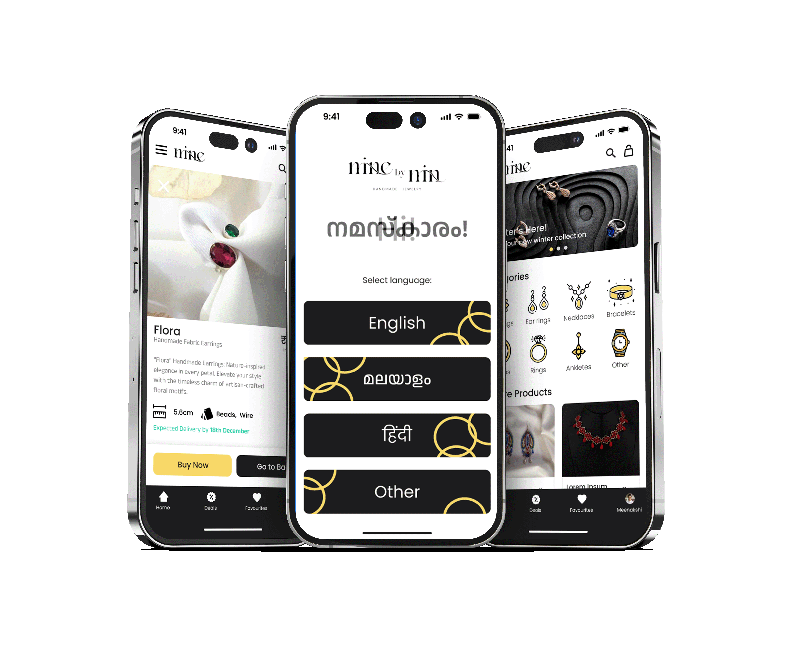
The final prototype connects onboarding, payment setup, product discovery, and order completion into one mobile-first experience.
Final screens
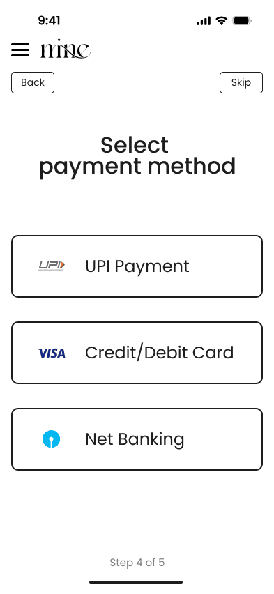
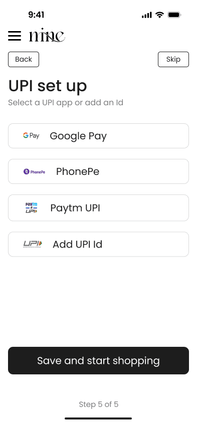
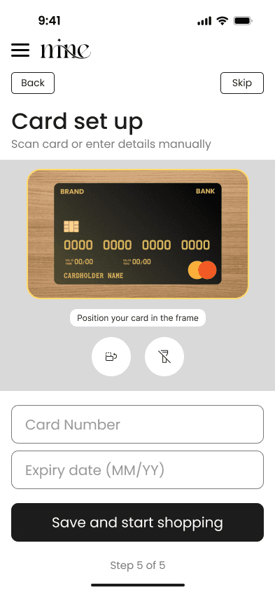
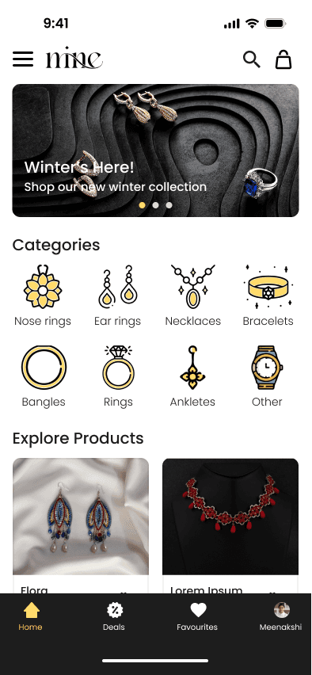
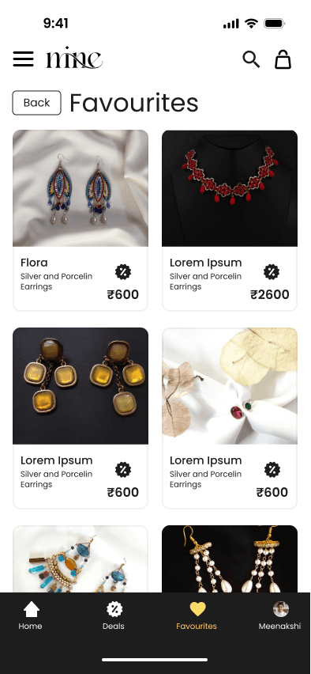
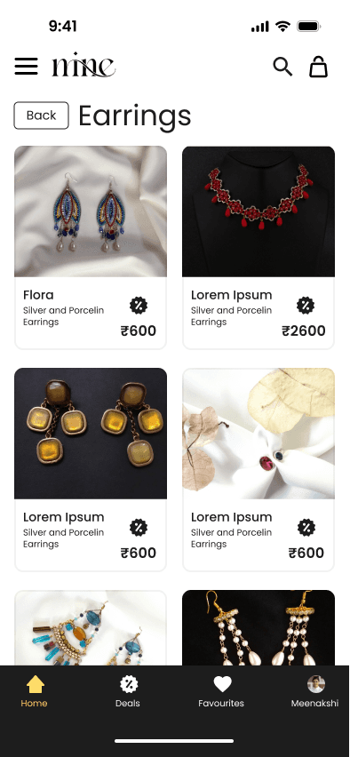
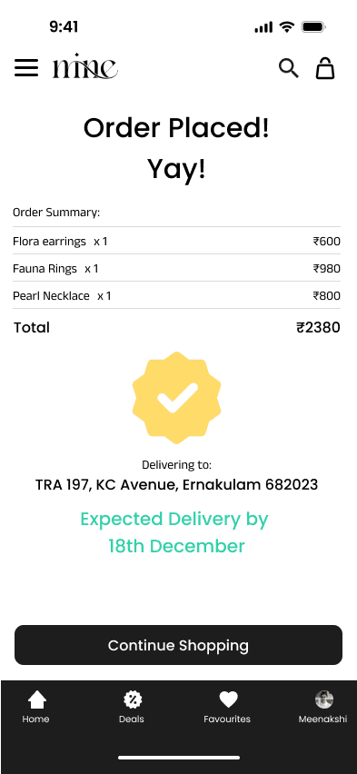
Final screens show the full arc: payment confidence, product browsing, saved items, and a clear post-purchase state.
Outcome
Mine by Min became more than a storefront. It became a guided purchase experience for people who loved local handmade jewellery but needed different kinds of proof before ordering: language comfort, payment reassurance, realistic product detail, and a checkout flow that made the final action feel safe.